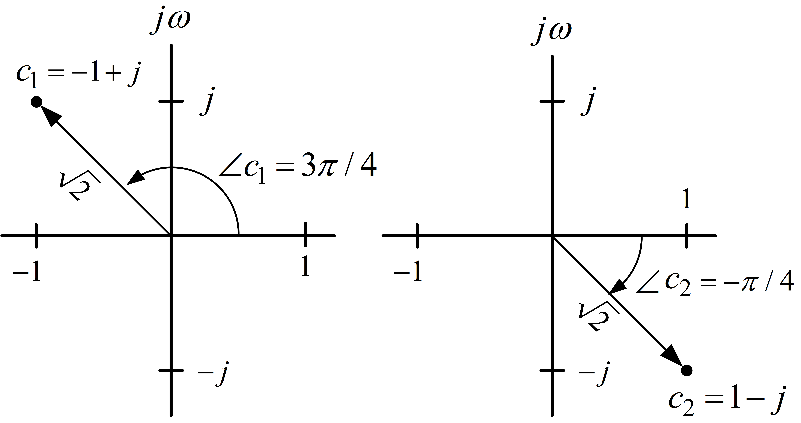
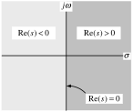

Laplace Transforms
System Modeling and Control · Chapter 2
Contents
Laplace Transform Definition and Examples
Laplace Transform Properties
Partial Fraction Expansion
Poles and Zeros
Poles and Partial Fractions
Definition and Examples
Definition Laplace Transform
Let \(f(t)\) for \(t\geq0\) denote a time function. Define the Laplace transform \(\mathcal{L} \{f\}\) of \(f\) as \[\mathcal{L} \{f(t)\}\triangleq\int_{0}^{\infty}e^{-st}f(t)dt\] where \(s=\sigma+j\omega\in \mathbb{C}\) is a complex number.
Notation The symbol “\(\triangleq\)” means by definition.
We also use \(F(s)\) to denote the Laplace transform, i.e., \(F(s)\triangleq \int_{0}^{\infty}e^{-st}f(t)dt.\)
Remark The integral does not exist for all \(s=\sigma+j\omega\) \(\in \mathbb{C} .\)
The region of convergence (ROC) is the set of values of \(s\) for which the integral exists.
This is computed in the examples below.
Example: Unit Step Function \(u_{s}(t)\)
The unit step function \(u_{s}(t)\) is defined as \[u_{s}(t)\triangleq\left\{ \begin{array}{ll} 1, & t\geq0,\\ 0, & t<0. \end{array} \right.\] Its Laplace transform is then \[\begin{aligned} \mathcal{L} \{u_{s}(t)\}=\int_{0}^{\infty}e^{-st}u_{s}(t)dt=\int_{0}^{\infty} e^{-st}dt=\left. \frac{e^{-st}}{-s}\right\vert _{t=0}^{\infty} & =\lim_{t\rightarrow\infty}\frac{e^{-st}}{-s}-\left. \frac{e^{-st}} {-s}\right\vert _{t=0}\\ & =\lim_{t\rightarrow\infty}\frac{e^{-st}}{-s}+\frac{1}{s}. \end{aligned}\]
Now \(\lim_{t\rightarrow\infty}e^{-st}=\lim_{t\rightarrow\infty}e^{-(\sigma +j\omega)t}=\lim_{t\rightarrow\infty}e^{-\sigma t}e^{-j\omega t}.\)
Euler’s Formula: \(e^{j\omega t}=\cos(\omega t)+j\sin(\omega t)\)
We then have \[\begin{aligned} \lim_{t\rightarrow\infty}e^{-st}=\lim_{t\rightarrow\infty}e^{-\sigma t}e^{-j\omega t} & =\lim_{t\rightarrow\infty}e^{-\sigma t}\!\left( \cos(\omega t)-j\sin(\omega t)\right) \\ & =\left\{ \begin{array}{cl} 0, & \sigma>0\\ \text{does not exist,} & \sigma\leq0. \end{array} \right. \end{aligned}\] Thus \[\mathcal{L} \{u_{s}(t)\}=\frac{1}{s}\text{ for }\sigma=\operatorname{Re}\{s\}>0.\]
Example: \(f(t)=e^{2t}u_{s}(t)\)
\[\begin{aligned} \mathcal{L} \{e^{2t}u_{s}(t)\}=\int_{0}^{\infty}e^{-st}e^{2t}dt & =\int_{0}^{\infty }e^{-(s-2)t}dt\\ & =\left. \frac{e^{-(s-2)t}}{-(s-2)}\right\vert _{t=0}^{\infty}\\ & =\lim_{t\rightarrow\infty}\frac{e^{-(s-2)t}}{-(s-2)}-\left. \frac {e^{-(s-2)t}}{-(s-2)}\right\vert _{t=0}\\ & =\lim_{t\rightarrow\infty}\frac{e^{-(s-2)t}}{-(s-2)}+\frac{1}{s-2}. \end{aligned}\] \[\begin{aligned} \text{As \ }\lim_{t\rightarrow\infty}e^{-(s-2)t}=\lim_{t\rightarrow\infty }e^{-(\sigma-2+j\omega)t} & =\lim_{t\rightarrow\infty}e^{-(\sigma -2)t}e^{-j\omega t}\\ & =\lim_{t\rightarrow\infty}e^{-(\sigma-2)t}(\cos(-\omega t)+j\sin(-\omega t))\\ & =\left\{ \begin{array}{cl} 0, & \sigma>2\\ \text{does not exist,} & \sigma\leq2 \end{array} \right. \end{aligned}\] we have \[\mathcal{L} \{e^{2t}u_{s}(t)\}=\frac{1}{s-2}\text{ for }\sigma=\operatorname{Re} \{s\}>2.\]
Example: \(f(t)=e^{(\sigma_{0}+j\omega_{0})t}u_{s}(t)=e^{\sigma _{0}t}e^{j\omega_{0}t}=e^{\sigma_{0}t}(\cos(\omega_{0}t)+j\sin(\omega _{0}t))u_{s}(t)\)
\[ \begin{aligned} \mathcal{L}\{e^{(\sigma_{0}+j\omega_{0})t}u_{s}(t)\} &= \int_{0}^{\infty} e^{-st}e^{(\sigma_{0}+j\omega_{0})t}\,dt \\ &= \int_{0}^{\infty} e^{-[s-(\sigma_{0}+j\omega_{0})]t}\,dt \\ &= \left. \frac{e^{-[s-(\sigma_{0}+j\omega_{0})]t}} {-[s-(\sigma_{0}+j\omega_{0})]} \right\vert_{0}^{\infty} \\ &= \lim_{t\rightarrow\infty} \frac{e^{-[s-(\sigma_{0}+j\omega_{0})]t}} {-[s-(\sigma_{0}+j\omega_{0})]} - \left. \frac{e^{-[s-(\sigma_{0}+j\omega_{0})]t}} {-[s-(\sigma_{0}+j\omega_{0})]} \right\vert_{0} \\ &= \underbrace{\lim_{t\rightarrow\infty} \frac{e^{-(s-\sigma_{0})t+j\omega_{0}t}} {-[s-(\sigma_{0}+j\omega_{0})]}} _{=0\text{ for }\sigma>\sigma_{0}} + \frac{1}{s-(\sigma_{0}+j\omega_{0})}. \end{aligned} \]
\[\begin{aligned} \lim_{t\rightarrow\infty}e^{-(s-\sigma_{0})t+j\omega_{0}t} & =\lim _{t\rightarrow\infty}e^{-(\sigma-\sigma_{0})t}e^{j(\omega_{0}-\omega)t}\\ & =\lim_{t\rightarrow\infty}e^{-(\sigma-\sigma_{0})t}\left( \cos((\omega _{0}-\omega)t)+j\sin((\omega_{0}-\omega)t)\right) \\ & =\left\{ \begin{array}{cc} 0, & \sigma>\sigma_{0},\\ \text{does not exist,} & \sigma\leq\sigma_{0}. \end{array} \right. \end{aligned}\]
Example: \(f(t)=e^{(\sigma_{0}+j\omega_{0})t}u_{s}(t)=e^{\sigma _{0}t}(\cos(\omega_{0}t)+j\sin(\omega_{0}t))u_{s}(t)\) (continued)
So for \(\sigma=\operatorname{Re}\{s\}>\sigma_{0}=\operatorname{Re}\{\sigma _{0}+j\omega_{0}\}\) we have \[\mathcal{L} \{e^{(\sigma_{0}+j\omega_{0})t}u_{s}(t)\}=\frac{1}{s-(\sigma_{0}+j\omega_{0} )}=\frac{1}{s-\sigma_{0}-j\omega_{0}}\frac{s-\sigma_{0}+j\omega_{0}} {s-\sigma_{0}+j\omega_{0}}=\frac{s-\sigma_{0}+j\omega_{0}}{(s-\sigma_{0} )^{2}+\omega_{0}^{2}}.\]
We may rewrite this as
\[\!\!\!\!\! \mathcal{L} \{e^{(\sigma_{0}+j\omega_{0})t}u_{s}(t)\}\!=\! \mathcal{L} \{e^{\sigma_{0}t}\cos(\omega_{0}t)u_{s}(t)\!+\!je^{\sigma_{0}t}\sin(\omega _{0}t)u_{s}(t)\}\!=\!\frac{s-\sigma_{0}}{(s-\sigma_{0})^{2}+\omega_{0}^{2} }\!+\!j\frac{\omega_{0}}{(s-\sigma_{0})^{2}+\omega_{0}^{2}}\] This implies that \[\begin{aligned} \mathcal{L} \{e^{\sigma_{0}t}\cos(\omega_{0}t)u_{s}(t)\} & =\frac{s-\sigma_{0}} {(s-\sigma_{0})^{2}+\omega_{0}^{2}}\\ \mathcal{L} \{e^{\sigma_{0}t}\sin(\omega_{0}t)u_{s}(t)\} & =\frac{\omega_{0}} {(s-\sigma_{0})^{2}+\omega_{0}^{2}}. \end{aligned}\] In particular, for \(\sigma_{0}=0,\) we have \[\begin{aligned} \mathcal{L} \{\cos(\omega_{0}t)u_{s}(t)\} & =\frac{s}{s^{2}+\omega_{0}^{2}}\\ \mathcal{L} \{\sin(\omega_{0}t)u_{s}(t)\} & =\frac{\omega_{0}}{s^{2}+\omega_{0}^{2}}. \end{aligned}\]
Laplace Transform Properties
- Property 1
-
\(\mathcal{L} \{tf(t)\}=-\dfrac{d}{ds}F(s)\)
Let \[\mathcal{L} \{f(t)\}=F(s)\] then \[\mathcal{L} \{tf(t)\}=-\frac{d}{ds}F(s).\] Proof: \[F(s)=\int_{0}^{\infty}e^{-st}f(t)dt\] then \[\begin{aligned} -\frac{d}{ds}F(s)=-\frac{d}{ds}\int_{0}^{\infty}e^{-st}f(t)dt & =-\int _{0}^{\infty}(-t)e^{-st}f(t)dt\\ & \\ & =\int_{0}^{\infty}te^{-st}f(t)dt. \end{aligned}\]
Example: \(\ \mathcal{L} \left\{ \dfrac{t^{n}}{n!}u_{s}(t)\right\} =\dfrac{1}{s^{n+1}}\)
\(\mathbf{n=0}\) We showed \[\mathcal{L} \{u_{s}(t)\}=\int_{0}^{\infty}e^{-st}dt=\dfrac{1}{s}\ \text{\ for }\operatorname{Re}\{s\}>0.\]
\(\mathbf{n=1}\) Differentiate \(\int_{0}^{\infty}e^{-st}dt=\dfrac{1}{s}\) with respect to \(s\) to obtain \[\int_{0}^{\infty}-te^{-st}dt=-\frac{1}{s^{2}}\] or \[\mathcal{L} \{tu_{s}(t)\}=\int_{0}^{\infty}te^{-st}dt=\frac{1}{s^{2}}\text{ for }\operatorname{Re}\{s\}>0.\]
\(\mathbf{n=2}\) Differentiate \(\int_{0}^{\infty}te^{-st}dt=\dfrac{1}{s^{2} }\) with respect to \(s\) to obtain \[\int_{0}^{\infty}(-t)te^{-st}dt=-\frac{2}{s^{3}}\] or \[\mathcal{L} \left\{ \dfrac{t^{2}}{2!}u_{s}(t)\right\} =\int_{0}^{\infty}\frac{t^{2}} {2}e^{-st}dt=\frac{1}{s^{3}}\text{ for }\operatorname{Re}\{s\}>0.\]
Example: \(\mathcal{L} \{t\cos(\omega t)u_{s}(t)\}=\dfrac{s^{2}-\omega^{2}}{\left( s^{2}+\omega ^{2}\right) ^{2}}\)
We have shown \[\mathcal{L} \{\cos(\omega t)u_{s}(t)\}=\frac{s}{s^{2}+\omega^{2}}\text{ for }\operatorname{Re}\{s\}>0.\] By property 1 we have \[\begin{aligned} \mathcal{L} \{t\cos(\omega t)u_{s}(t)\}=-\frac{d}{ds}\frac{s}{s^{2}+\omega^{2}} & =-\frac{1}{s^{2}+\omega^{2}}+\frac{s(2s)}{(s^{2}+\omega^{2})^{2}}\\ & \\ & =-\frac{s^{2}+\omega^{2}}{(s^{2}+\omega^{2})^{2}}+\frac{s(2s)}{(s^{2} +\omega^{2})^{2}}\\ & \\ & =\frac{s^{2}-\omega^{2}}{\left( s^{2}+\omega^{2}\right) ^{2}}\text{ for }\operatorname{Re}\{s\}>0. \end{aligned}\]
\(\mathcal{L} \{e^{\alpha t}f(t)\}=F(s-\alpha)\)
Let \[\mathcal{L} \{f(t)\}=F(s)\text{ for }\operatorname{Re}\{s\}>\sigma\] then \[\mathcal{L} \{e^{\alpha t}f(t)\}=F(s-\alpha)\text{ for }\operatorname{Re}\{s\}>\sigma +\alpha.\] Proof: \[\mathcal{L} \{e^{\alpha t}f(t)\}=\int_{0}^{\infty}e^{-st}e^{\alpha t}f(t)dt=\int _{0}^{\infty}e^{-(s-\alpha)t}f(t)dt=F(s-\alpha).\]
Example \(f(t)=\cos(\omega t)\)
Knowing \[\mathcal{L} \{\cos(\omega t)u_{s}(t)\}=\frac{s}{s^{2}+\omega^{2}}\text{ for }\operatorname{Re}\{s\}>0\] it follows that \[\mathcal{L} \{e^{\alpha t}\cos(\omega t)u_{s}(t)\}=\frac{s-\alpha}{(s-\alpha)^{2} +\omega^{2}}\text{ for }\operatorname{Re}\{s\}>\alpha.\]
- Property 3
-
\(\mathcal{L} \left\{\dfrac{d}{dt}f(t)\right\}=sF(s)-f(0)\)
If \(\mathcal{L}\{f(t)\}=F(s)\) for \(\operatorname{Re}\{s\}>\sigma\), then
\[ \mathcal{L}\left\{\dfrac{d}{dt}f(t)\right\} =sF(s)-f(0), \qquad \operatorname{Re}\{s\}>\sigma. \]
Proof: By definition,
\[ \mathcal{L}\left\{\dfrac{d}{dt}f(t)\right\} \triangleq \int_{0}^{\infty}e^{-st}f^{\prime}(t)\,dt. \]
Integrate by parts with
\[ u=e^{-st},\quad dv=f^{\prime}(t)\,dt, \qquad du=-se^{-st}\,dt,\quad v=f(t). \]
Therefore,
\[\begin{aligned} \int_{0}^{\infty}e^{-st}f^{\prime}(t)\,dt &=\left.e^{-st}f(t)\right|_{0}^{\infty} +s\int_{0}^{\infty}e^{-st}f(t)\,dt\\ &=-f(0)+sF(s), \qquad \operatorname{Re}\{s\}>\sigma. \end{aligned}\]
Example Solving a Differential Equation
Consider \[\frac{dx}{dt}+ax=u_{s}(t),\ u_{s}\text{ is a step input.}\] With \[X(s)\triangleq \mathcal{L} \{x(t)\}\] we have \[\mathcal{L} \{\dot{x}(t)\}=sX(s)-x(0)\text{ and } \mathcal{L} \{u_{s}(t)\}=\frac{1}{s}.\] Then \[\mathcal{L} \left\{ \frac{dx}{dt}+ax\right\} = \mathcal{L} \mathfrak{\{}u_{s}(t)\}\] or \[sX(s)-x(0)+aX(s)=\frac{1}{s}.\] Rearranging gives \[X(s)=\frac{x(0)}{s+a}+\frac{1}{s(s+a)}=\frac{x(0)}{s+a}+\frac{1}{a}\frac{1} {s}-\frac{1}{a}\frac{1}{s+a}.\] \(x(t)\) is then \[x(t)= \mathcal{L} ^{-1}\left\{ \frac{x(0)}{s+a}+\frac{1}{a}\frac{1}{s}-\frac{1}{a}\frac{1} {s+a}\right\} =x(0)e^{-at}+\frac{1}{a}u_{s}(t)-\frac{1}{a}e^{-at}u_{s}(t).\]
Partial Fraction Expansions
Example \(\ \ F(s)=\dfrac{1}{(s+2)(s+3)}\)
Write \[F(s)=\dfrac{1}{(s+2)(s+3)}=\frac{A}{s+2}+\frac{B}{s+3}.\] Then \[(s+2)F(s)=\dfrac{1}{s+3}=A+B\frac{s+2}{s+3}\] so that \[\lim_{s\rightarrow-2}(s+2)F(s)=\underset{1}{\underbrace{\lim_{s\rightarrow -2}\dfrac{1}{s+3}}}=\lim_{s\rightarrow-2}\left( A+B\frac{s+2}{s+3}\right) =A.\] Thus \[A=1.\]
Example \(\ \ F(s)=\dfrac{1}{(s+2)(s+3)}\) (continued)
Similarly, \[(s+3)F(s)=\dfrac{1}{s+2}=A\frac{s+3}{s+2}+B\] so that \[\lim_{s\rightarrow-3}(s+3)F(s)=\underset{-1}{\underbrace{\lim_{s\rightarrow -3}\dfrac{1}{s+2}}}=\lim_{s\rightarrow-3}\left( A\frac{s+3}{s+2}+B\right) =B\] or \[B=-1.\] We then have \[F(s)=\dfrac{1}{(s+2)(s+3)}=\frac{1}{s+2}-\frac{1}{s+3}.\] Table of Laplace transforms: \[\mathcal{L} \{e^{-at}u_{s}(t)\}=\frac{1}{s+a}\] and thus \[f(t)= \mathcal{L} ^{-1}\left\{ \frac{1}{s+2}-\frac{1}{s+3}\right\} =(e^{-2t}-e^{-3t})u_{s}(t).\]
Example \(\ F(s)=\dfrac{2s+12}{s^{2}+2s+5}\)
The roots of \[s^{2}+2s+5=0\] are \[s=\frac{-2\pm\sqrt{2^{2}-4\times5}}{2}=\frac{-2\pm\sqrt{-16}}{2}=-1\pm j2.\] Factor the denominator: \[\begin{aligned} s^{2}+2s+5=[s-(-1+2j)][s-(-1-2j)] & =(s+1-2j)(s+1+2j)\\ & =(s+1)^{2}+4. \end{aligned}\] \[\begin{aligned} \text{LT table: \ } \mathcal{L} \{e^{\sigma t}\sin(\omega t)u_{s}(t)\} & =\frac{\omega}{(s-\sigma)^{2} +\omega^{2}}\\ \mathcal{L} \{e^{\sigma t}\cos(\omega t)u_{s}(t)\} & =\frac{s-\sigma}{(s-\sigma )^{2}+\omega^{2}}. \end{aligned}\] Identify \(\sigma=-1,\omega=2.\) \[\begin{aligned} F(s)=\dfrac{2s+12}{s^{2}+2s+5}=\frac{2s+12}{(s+1)^{2}+4} & =\frac {2(s+1)+10}{(s+1)^{2}+4}\\ & =2\frac{s+1}{(s+1)^{2}+4}+5\frac{2}{(s+1)^{2}+4}. \end{aligned}\] \[\text{LT table: \ }f(t)=2e^{-t}\cos(2t)u_{s}(t)+5e^{-t}\sin(2t)u_{s}(t).\]
Digression on Complex Numbers
Complex number: \[c=a+jb,\qquad a,b\in \mathbb{R} .\] Complex conjugate \(c^{\ast}\) of \(c\): \[c^{\ast}\triangleq a-jb.\] Note that \[(c^{\ast})^{\ast}=(a-jb)^{\ast}=a+jb=c.\] Magnitude of \(c:\) \[|c|\text{ }=\sqrt{cc^{\ast}}=\sqrt{(a+jb)(a-jb)}=\sqrt{a^{2}+b^{2}}\] \(|c^{\ast}|\) \(=|c|\) as \[|c^{\ast}|=\sqrt{c^{\ast}(c^{\ast})^{\ast}}=\sqrt{(a-jb)(a+jb)}=\sqrt {a^{2}+b^{2}}=|c|.\]
Digression on Complex Numbers (continued)
\(\angle c\triangleq\tan^{-1}(b,a)\) same as the computer language command
atan2(b,a).Be aware of which quadrant \(c\) is in!

\(c_{1}=-1+j\) \(\Longrightarrow\) \(\angle c_{1}=\tan^{-1}(+1,-1)=3\pi/4\).
\(c_{2}=+1-j\) \(\Longrightarrow\) \(\angle c_{2}=\tan^{-1}(-1,+1)=-\pi/4.\)
Digression on Complex Numbers (continued)
Polar Coordinate Representation:
\(c=|c|e^{j\angle c}=|c|\cos(\angle c)+j|c|\sin(\angle c).\)
\[\begin{aligned} c^{\ast}=\left( |c|\cos(\angle c)+j|c|\sin(\angle c)\right) ^{\ast} & =|c|\cos(\angle c)-j|c|\sin(\angle c)\\ & =|c|\cos(-\angle c)+j|c|\sin(-\angle c)\\ & =|c|e^{-j\angle c}. \end{aligned}\]
That is, \(|c^{\ast}|=|c|\) and \(\angle c^{\ast}=-\angle c.\)
\[\begin{aligned} (c_{1}c_{2})^{\ast}=\left( (a_{1}+jb_{1})(a_{2}+jb_{2})\right) ^{\ast}=\left( |c_{1}|e^{j\angle c_{1}}|c_{2}|e^{j\angle c_{2}}\right) ^{\ast} & =\left( |c_{1}||c_{2}|e^{j(\angle c_{1}+\angle c_{2})}\right) ^{\ast}\\ & =|c_{1}||c_{2}|e^{-j(\angle c_{1}+\angle c_{2})}\\ & =|c_{1}|e^{-j\angle c_{1}}|c_{2}|e^{-j\angle c_{2}}\\ & =c_{1}^{\ast}c_{2}^{\ast} \end{aligned}\]
Similarly,
\[ \left(\frac{c_{1}}{c_{2}}\right)^{\ast} =\frac{c_{1}^{\ast}}{c_{2}^{\ast}}, \qquad (c_{1}+c_{2})^{\ast}=c_{1}^{\ast}+c_{2}^{\ast}. \]
End of Digression
Example \(F(s)=\dfrac{2s+12}{s^{2}+2s+5}\)
Reconsider previous example: \[F(s)=\frac{2s+12}{[s-(-1+2j)][s-(-1-2j)]}=\frac{\beta_{1}}{s-(-1+2j)} +\frac{\beta_{2}}{s-(-1-2j)}.\] Then \[[ s-(-1+2j)]F(s)=[s-(-1+2j)]\dfrac{2s+12}{s^{2}+2s+5}=\frac {2s+12}{s-(-1-2j)}\] and \[[ s-(-1+2j)]F(s)=\beta_{1}+\frac{\beta_{2}[s-(-1+2j)]}{s-(-1-2j)}.\] Therefore \[\lim_{s\rightarrow-1+2j}[s-(-1+2j)]F(s)=\beta_{1}\] and \[\begin{aligned} \lim_{s\rightarrow-1+2j}[s-(-1+2j)]F(s)=\lim_{s\rightarrow-1+2j}\frac {2s+12}{s-(-1-2j)} & =\frac{2(-1+2j)+12}{-1+2j-(-1-2j)}\\ & =\frac{10+4j}{4j}\\ & =1-2.5j. \end{aligned}\] Thus \(\beta_{1}=1-2.5j.\)
Example \(F(s)=\dfrac{2s+12}{s^{2}+2s+5}\) (continued)
Similarly, \[\begin{aligned} \beta_{2} & =\lim_{s\rightarrow-1-2j}[s-(-1-2j)]F(s)\\ & =\lim_{s\rightarrow-1-2j}[s-(-1-2j)]\frac{2s+12}{[s-(-1+2j)][s-(-1-2j)]}\\ & =\lim_{s\rightarrow-1-2j}\frac{2s+12}{s-(-1+2j)}\\ & =\frac{2(-1-2j)+12}{-1-2j-(-1+2j)}\\ & =\frac{10-4j}{-4j}\\ & =1+2.5j. \end{aligned}\] An important point to note here is that \[\beta_{2}=\beta_{1}^{\ast}.\] This will always be the case!
Finally \[F(s)=\frac{1-2.5j}{s-(-1+2j)}+\frac{1+2.5j}{s-(-1-2j)}.\]
\(F(s)=\dfrac{2s+12}{s^{2}+2s+5}\) (continued)
This result can be checked using MATLAB:
\(F(s)=\dfrac{2s+12}{s^{2}+2s+5}\) (continued)
Put \(\beta_{1}=1-2.5j\) into polar coordinate form.
We have \[\begin{aligned} \beta_{1}=|\beta_{1}|e^{j\angle\beta_{1}}=|1-2.5j|e^{j\angle(1-2.5j)} & =\sqrt{1^{2}+(2.5)^{2}}e^{j\tan^{-1}(-2.5,1)}\\ & =2.693e^{-j1.19}\\ & =2.693e^{-j68.2^{\circ}}. \end{aligned}\]
\(F(s)=\dfrac{2s+12}{s^{2}+2s+5}\) (continued)
Putting \(\beta_{1},\beta_{2}=\beta_{1}^{\ast}\) in polar coordinate form we have \[\begin{aligned} f(t)= \mathcal{L} ^{-1}\{F(s)\} & = \mathcal{L} ^{-1}\left\{ \frac{\beta_{1}}{s-(-1+2j)}+\frac{\beta_{1}^{\ast}} {s-(-1-2j)}\right\} \\ & =(\beta_{1}e^{(-1+2j)t}+\beta_{1}^{\ast}e^{(-1-2j)t})u_{s}(t)\\ & =(|\beta_{1}|e^{j\angle\beta_{1}}e^{-t}e^{2jt}+|\beta_{1}|e^{-j\angle \beta_{1}}e^{-t}e^{-2jt})u_{s}(t)\\ & =|\beta_{1}|e^{-t}(e^{j(2t+\angle\beta_{1})}+e^{-j(2t+\angle\beta_{1} )})u_{s}(t)\\ & =2|\beta_{1}|e^{-t}\cos(2t+\angle\beta_{1})u_{s}(t)\text{ by Euler's formula}\\ & =2|\beta_{1}|e^{-t}\!\!\cos(2t)\!\cos(\angle\beta_{1})u_{s}(t)-2|\beta _{1}|e^{-t}\!\!\sin(2t)\!\sin(\angle\beta_{1})u_{s}(t) \end{aligned}\] Previously we showed \(f(t)=2e^{-t}\cos(2t)+5e^{-t}\sin(2t).\)
Use MATLAB to show \[\begin{aligned} 2 & =+2|\beta_{1}|\cos(\angle\beta_{1})=+2\times2.6932\cos(-1.19)\\ 5 & =-2|\beta_{1}|\sin(\angle\beta_{1})\text{ }=-2\times2.6932\sin(-1.19) \end{aligned}\]
Example: \(F(s)=\dfrac{1}{s(s+2)^{2}}.\) The denominator has a double root!
Expand \(F(s)\) as \[F(s)=\frac{1}{s(s+2)^{2}}=\frac{A_{0}}{s}+\frac{A_{1}}{s+2}+\frac{A_{2} }{(s+2)^{2}}.\] Multiply through by \(s(s+2)^{2}\) to obtain \[1=A_{0}(s+2)^{2}+A_{1}s(s+2)+A_{2}s\] or \[1=(A_{0}+A_{1})s^{2}+(4A_{0}+2A_{1}+A_{2})s+4A_{0}.\] Equate coefficients of \(s:\) \[A_{0}=1/4,A_{1}=-1/4,A_{2}=-1/2.\] Thus \[\frac{1}{s(s+2)^{2}}=\frac{1/4}{s}-\frac{1/4}{s+2}-\frac{1/2}{(s+2)^{2}}\] and finally1 \[f(t)=\frac{1}{4}u_{s}(t)-\frac{1}{4}e^{-2t}u_{s}(t)-\frac{1}{2}te^{-2t} u_{s}(t).\]
Example \(\ F(s)=\dfrac{1}{s(s+2)^{2}}\) (continued)
Quicker partial expansion: \[F(s)=\frac{1}{s(s+2)^{2}}=\frac{A_{0}}{s}+\frac{A_{1}}{s+2}+\frac{A_{2} }{(s+2)^{2}}.\] Multiply through by \((s+2)^{2}\) to get \[\frac{1}{s}=\frac{A_{0}}{s}(s+2)^{2}+A_{1}(s+2)+A_{2}.\] Set \(s=-2\) to obtain \(A_{2}=-1/2\).
Continue with \[\frac{1}{s(s+2)^{2}}=\frac{A_{0}}{s}+\frac{A_{1}}{s+2}-\frac{1/2}{(s+2)^{2}}.\]
Example \(\ F(s)=\dfrac{1}{s(s^{2}+s+1)}\)
Solve \(s^{2}+s+1=0\) to obtain \[s=\frac{-1\pm\sqrt{1^{2}-4(1)(1)}}{2}=-\frac{1}{2}\pm j\frac{\sqrt{3}}{2}.\] Then \(F(s)\) can be written as \[\begin{aligned} F(s)=\dfrac{1}{s(s^{2}+s+1)} & =\dfrac{1}{s[s-(-1/2+j\sqrt{3} /2)][s-(-1/2-j\sqrt{3}/2)]}\!\\ & =\dfrac{1}{s[s+1/2-j\sqrt{3}/2][s+1/2+j\sqrt{3}/2]}\\ & =\dfrac{1}{s[(s+1/2)^{2}+3/4)]}. \end{aligned}\] Partial fraction expansion theory says to write \[F(s)=\dfrac{1}{s(s^{2}+s+1)}=B_{0}\frac{1}{s}+\frac{B_{1}s+B_{2}} {(s+1/2)^{2}+3/4}.\] However, with \(B_{0}=A_{0},B_{1}=A_{1},\) and \(B_{2}=A_{1}/2+A_{2}\sqrt{3}/2,\) we write \[F(s)=\dfrac{1}{s\underset{s(s^{2}+s+1)}{\underbrace{((s+1/2)^{2}+3/4)}}} =A_{0}\frac{1}{s}+A_{1}\!\underset{ \mathcal{L} \{e^{-(1/2)t}\cos(\sqrt{3}/2t)\}}{\underbrace{\frac{s+1/2}{(s+1/2)^{2}+3/4}} }\!\!+\text{ }A_{2}\!\underset{ \mathcal{L} \{e^{-(1/2)t}\sin(\sqrt{3}/2t)\}}{\underbrace{\frac{\sqrt{3}/2}{(s+1/2)^{2} +3/4}}}.\]
Example \(\ F(s)=\dfrac{1}{s(s^{2}+s+1)}\) (continued)
Multiply through by \(s(s^{2}+s+1):\) \[1=A_{0}(s^{2}+s+1)+A_{1}s(s+1/2)+A_{2}s\sqrt{3}/2\] or \[1=A_{0}+\left( \!A_{0}+\frac{1}{2}A_{1}+\frac{\sqrt{3}}{2}A_{2}\!\right) \!s+(A_{0}+A_{1})s^{2}.\] This results in \[A_{0}=1,\qquad A_{1}=-1,\qquad A_{2}=-\frac{A_{0}+A_{1}/2}{\sqrt{3} /2}=-\frac{1}{\sqrt{3}}.\] Then
\[F(s)=\dfrac{1}{s\underset{s(s^{2}+s+1)}{\underbrace{[(s+1/2)^{2}+3/4]}} }=(1)\frac{1}{s}+(-1)\underset{ \mathcal{L} \{e^{-(1/2)t}\cos(\sqrt{3}/2t)\}}{\underbrace{\frac{s+1/2}{(s+1/2)^{2}+3/4}} }+(-1/\sqrt{3})\underset{ \mathcal{L} \{e^{-(1/2)t}\sin(\sqrt{3}/2t)\}}{\underbrace{\frac{\sqrt{3}/2}{(s+1/2)^{2} +3/4}}}\] and so
\[f(t)=u_{s}(t)-e^{-(1/2)t}\cos(\sqrt{3}/2t)u_{s}(t)-\sqrt{1/3}e^{-(1/2)t} \sin(\sqrt{3}/2t)u_{s}(t).\]
Example \(\ F(s)=\dfrac{1}{s(s^{2}+s+1)}\) Redo previous example the hard way!
\[\begin{aligned} F(s) & =\dfrac{1}{s[s-(-1/2+j\sqrt{3}/2)][s-(-1/2-j\sqrt{3}/2)]}\\ & =A\frac{1}{s}+\dfrac{\beta_{1}}{s-(-1/2+j\sqrt{3}/2)}+\dfrac{\beta_{1} ^{\ast}}{s-(-1/2-j\sqrt{3}/2)}. \end{aligned}\] Then \(A=\lim_{s\rightarrow0}sF(s)=\lim_{s\rightarrow0}\dfrac{1}{s^{2}+s+1}=1\) and \[\begin{aligned} \beta_{1} & =\lim_{s\rightarrow-1/2+j\sqrt{3}/2}[s-(-1/2+j\sqrt{3}/2)]F(s)\\ & =\lim_{s\rightarrow-1/2+j\sqrt{3}/2}\dfrac{1}{s[s-(-1/2-j\sqrt{3}/2)]}\\ & =\dfrac{1}{(-1/2+j\sqrt{3}/2)[(-1/2+j\sqrt{3}/2)-(-1/2-j\sqrt{3}/2)]}\\ & =\dfrac{1}{(-1/2+j\sqrt{3}/2)j\sqrt{3}}=\dfrac{1}{-3/2-j\sqrt{3}/2} \dfrac{-3/2+j\sqrt{3}/2}{-3/2+j\sqrt{3}/2}\\ & =\dfrac{-3/2+j\sqrt{3}/2}{\underset{3}{\underbrace{9/4+3/4}}}=-\frac{1} {2}+j\frac{1}{2\sqrt{3}}\qquad\Longrightarrow\beta_{1}^{\ast} =-\dfrac{1}{2}-j\dfrac{1}{2\sqrt{3}}. \end{aligned}\]
Example \(F(s)=\dfrac{1}{s(s^2+s+1)}\) (continued)
We wrote
\[ F(s) =\frac{1}{s\underbrace{\left((s+1/2)^2+3/4\right)}_{s(s^2+s+1)}} =A_0\frac{1}{s} +A_1\underbrace{\frac{s+1/2}{(s+1/2)^2+3/4}}_{\mathcal{L}\{e^{-(1/2)t}\cos(\sqrt{3}t/2)u_s(t)\}} +A_2\underbrace{\frac{\sqrt{3}/2}{(s+1/2)^2+3/4}}_{\mathcal{L}\{e^{-(1/2)t}\sin(\sqrt{3}t/2)u_s(t)\}}. \]
Of course, we could have written
\[ F(s)=\frac{1}{s(s^2+s+1)}=B_0\frac{1}{s}+\frac{B_1s+B_2}{(s+1/2)^2+3/4}. \]
However,
\[ \frac{s}{(s+1/2)^2+3/4} \qquad\text{and}\qquad \frac{1}{(s+1/2)^2+3/4} \]
are not in the Laplace transform table!
Example \(\ F(s)=\dfrac{1}{s(s^{2}+s+1)}\) (continued)
Convert \(\beta_{1}=-\dfrac{1}{2}+j\dfrac{1}{2\sqrt{3}}\) to polar coordinate form: \[\begin{aligned} |\beta_{1}| & =\sqrt{1/4+1/12}=\sqrt{4/12}=\sqrt{\frac{1}{3}}\\ \angle\beta_{1}=\tan^{-1}\left( \frac{1}{2\sqrt{3}},-\frac{1}{2}\right) & =90^{\circ}+\tan^{-1}\left( \frac{\frac{1}{2}}{\frac{1}{2\sqrt{3}}}\right) \\ & =90^{\circ}+\tan^{-1}\left( \sqrt{3}\right) \\ & =150^{\circ}\text{ or }5\pi/6\text{ radians.} \end{aligned}\]
Recall that \(\tan^{-1}(b,a)\) is the same as the computer language command atan2(b,a).
Example \(\ F(s)=\dfrac{1}{s(s^{2}+s+1)}\) (continued)
\(F(s)=\dfrac{1}{s}+\dfrac{\sqrt{1/3}e^{j5\pi/6}}{s-(-1/2+j\sqrt{3}/2)} +\dfrac{\sqrt{1/3}e^{-j5\pi/6}}{s-(-1/2-j\sqrt{3}/2)}.\) \[\begin{aligned} f(t) & =u_{s}(t)+\sqrt{\frac{1}{3}}e^{j5\pi/6}e^{\left( -\frac{1}{2} +j\frac{\sqrt{3}}{2}\right) t}u_{s}(t)+\sqrt{\frac{1}{3}}e^{-j5\pi /6}e^{\left( -\frac{1}{2}-j\frac{\sqrt{3}}{2}\right) t}u_{s}(t)\\ & =u_{s}(t)+\sqrt{\frac{1}{3}}e^{-(1/2)t}e^{j(\sqrt{3}/2t+5\pi/6)} u_{s}(t)+\sqrt{\frac{1}{3}}e^{-(1/2)t}e^{-j(\sqrt{3}/2t+5\pi/6)}u_{s}(t)\\ & =u_{s}(t)+\sqrt{\frac{1}{3}}e^{-(1/2)t}\left( e^{j(\sqrt{3}/2t+5\pi /6)}+e^{-j(\sqrt{3}/2t+5\pi/6)}\right) \!u_{s}(t)\\ & =u_{s}(t)+\sqrt{\frac{1}{3}}e^{-(1/2)t}\text{ }2\cos(\sqrt{3}/2t+5\pi /6)u_{s}(t)\qquad\text{Euler's formula}\\ & =u_{s}(t)+\sqrt{\frac{1}{3}}e^{-(1/2)t}\text{ }2\!\left( \cos(\sqrt {3}/2t)\cos(5\pi/6)-\sin(\sqrt{3}/2t)\sin(5\pi/6)\right) \!u_{s}(t)\\ & =u_{s}(t)+\sqrt{\frac{1}{3}}e^{-(1/2)t}\text{ }2\!\left( \cos(\sqrt {3}/2t)\frac{-\sqrt{3}}{2}-\sin(\sqrt{3}/2t)\frac{1}{2}\right) \!u_{s}(t)\\ & =u_{s}(t)-e^{-(1/2)t}\cos(\sqrt{3}/2t)u_{s}(t)-\sqrt{1/3}e^{-(1/2)t} \sin(\sqrt{3}/2t)u_{s}(t). \end{aligned}\]
Same expression as previous example!
Non Strictly Proper Rational Functions
All examples so far had strictly proper rational functions.
That is, we had \[F(s)=\frac{b(s)}{a(s)},\qquad\deg\{b(s)\}<\deg\{a(s)\}.\] Consider \[F(s)=\frac{(s+2)(s+3)}{(s+1)(s+4)}=\frac{s^{2}+5s+6}{s^{2}+5s+4}.\]
\(F(s)\) is proper as \(\deg\{b(s)\}\leq\deg\{a(s)\}.\)
\(F(s)\) is not strictly proper as \(\deg\{b(s)\}=\deg\{a(s)\}\).
Proceed as follows: \[\begin{aligned} F(s)=\frac{s^{2}+5s+6}{s^{2}+5s+4}=\frac{s^{2}+5s+4}{s^{2}+5s+4}+\frac {2}{s^{2}+5s+4} & =1+\frac{2}{s^{2}+5s+4}\\ & =1+\frac{2}{(s+1)(s+4)}\\ & =1+\frac{A}{s+1}+\frac{B}{s+4}\\ & =1+\frac{2/3}{s+1}-\frac{2/3}{s+4}. \end{aligned}\]
Non Strictly Proper Rational Functions (continued)
Example \(\ F(s)=\dfrac{s^{3}}{s^{2}+5s+4}\) \(F(s)\) is not proper!
Use long division: \[\begin{array}{r|l} & s-5\\ s^{2}+5s+4 & \overline{s^{3}+0s^{2}+0s+0}\\ & \underline{s^{3}+5s^{2}+4s}\\ & -5s^{2}-4s\\ & \underline{-5s^{2}-25s-20}\\ & 21s+20 \end{array}\] Thus \[\begin{aligned} F(s)=\dfrac{s^{3}}{s^{2}+5s+4}=s-5+\frac{21s+20}{s^{2}+5s+4} & =s-5+\frac {A}{s+1}+\frac{B}{s+4}\\ & \\ & =s-5-\frac{1/3}{s+1}+\frac{64/3}{s+4}. \end{aligned}\] That is, \[F(s)=\frac{s^{3}}{s^{2}+5s+4}=s-5-\frac{1/3}{s+1}+\frac{64/3}{s+4}.\]
From the previous slide: \[F(s)=\frac{s^{3}}{s^{2}+5s+4}=s-5-\frac{1/3}{s+1}+\frac{64/3}{s+4}.\]
Remark In a physical control system \(F(s)\) will always be strictly proper.
Poles and Zeros
We have computed the inverse Laplace transforms of \[F_{1}(s)\triangleq\dfrac{1}{(s+2)(s+3)}\] and \[F_{2}(s)\triangleq\dfrac{2s+12}{s^{2}+2s+5}.\]
\(F_{1}(s),F_{2}(s)\) are both rational functions in \(s\) (i.e., the ratio of two polynomials).
\(F_{1}(s),F_{2}(s)\) are both strictly proper.
In general, we will work with strictly proper rational functions, i.e., \[F(s)=\frac{b(s)}{a(s)}\] where \(b(s),a(s)\) are polynomials and \[\deg\{b(s)\}<\deg\{a(s)\}.\]
Definition Poles of \(F(s)=b(s)/a(s)\)
The poles of \(F(s)\) are the roots of \(a(s)=0.\)
Definition Zeros of \(F(s)=b(s)/a(s)\)
The zeros of \(F(s)\) are the roots of \(b(s)=0.\)
Example \(\ F_{1}(s)\triangleq\dfrac{1}{(s+2)(s+3)}\)
The poles of \[F_{1}(s)\triangleq\dfrac{1}{(s+2)(s+3)}\] are \[s=-2,s=-3.\] \(F_{1}(s)\) has no zeros as the numerator can never be zero.
Example \(\ F_{2}(s)\triangleq\dfrac{2s+12}{s^{2}+2s+5}\)
The poles of \[F_{2}(s)\triangleq\dfrac{2s+12}{s^{2}+2s+5}=\frac{2s+12} {[s-(-1+2j)][s-(-1-2j)]}\] are \[s=-1+2j,s=-1-2j.\] \(F_{2}(s)\) has one zero at \[s=-6.\]
Poles and Partial Fractions
Example \(F(s)=\dfrac{b(s)}{a(s)}=\dfrac{(s-z_{1})(s-z_{2} )}{(s-p_{1})(s-p_{2})(s-p_{3})}.\)
With \(p_{1},p_{2},p_{3}\) distinct, the partial fraction expansion is \[F(s)=\frac{A_{1}}{s-p_{1}}+\frac{A_{2}}{s-p_{2}}+\frac{A_{3}}{s-p_{3}}\] and therefore \[f(t)=A_{1}e^{p_{1}t}u_{s}(t)+A_{2}e^{p_{2}t}u_{s}(t)+A_{3}e^{p_{3}t}u_{s}(t).\]
The poles of \(F(s)\) determine the functions \(e^{p_{1}t},e^{p_{2} t},e^{p_{3}t}\).
The zeros only affect values of \(A_{1},A_{2},A_{3}\).
Example \(F(s)=\dfrac{(s-z_{1})(s-z_{2})}{(s-p_{1})(s-p_{2})^{2}}\)
The pfe is \[F(s)=\frac{A_{1}}{s-p_{1}}+\frac{A_{2}}{s-p_{2}}+\frac{A_{3}}{(s-p_{2})^{2}}\] and therefore \[f(t)=A_{1}e^{p_{1}t}u_{s}(t)+A_{2}e^{p_{2}t}u_{s}(t)+A_{3}te^{p_{2}t}u_{s}(t).\]
- Again, the poles of \(F(s)\) determine the form of the time response.
Example \(\ F(s)=\dfrac{s+3}{(s+2)(s+6)}\)
\[F(s)=\dfrac{(s+3)}{(s+2)(s+6)}=\dfrac{A}{s+2}+\frac{B}{s+6}.\] Without even evaluating \(A,B\) we know that \[f(t)=Ae^{-2t}u_{s}(t)+Be^{-6t}u_{s}(t).\] We see that \(f(t)\) dies out as \(t\rightarrow\infty.\)
Example \(\ F(s)=\dfrac{s+3}{(s+2)(s-6)}\)
\[F(s)=\dfrac{s+3}{(s+2)(s-6)}=\dfrac{A}{s+2}+\frac{B}{s-6}.\] Without even evaluating \(A,B\) we know that \[f(t)=Ae^{-2t}u_{s}(t)+Be^{6t}u_{s}(t).\] We see that \(f(t)\) does not die out as \(t\rightarrow\infty.\)
Example \(\ F(s)=\dfrac{2s+12}{s^{2}+2s+5}\) \[F(s)=\frac{2s+12}{[s-(-1+2j)][s-(-1-2j)]}=\frac{\beta_{1}}{s-(-1+2j)} +\frac{\beta_{1}^{\ast}}{s-(-1-2j)}.\] Without even evaluating \(\beta_{1},\beta_{1}^{\ast}\) we know that \[\begin{aligned} f(t) & =(\beta_{1}e^{(-1+2j)t}+\beta_{1}^{\ast}e^{(-1-2j)t})u_{s}(t)\\ & \\ & =(|\beta_{1}|e^{j\angle\beta_{1}}e^{-t}e^{2jt}+|\beta_{1}|e^{-j\angle \beta_{1}}e^{-t}e^{-2jt})u_{s}(t)\\ & \\ & =|\beta_{1}|e^{-t}(e^{j(2t+\angle\beta_{1})}+e^{-j(2t+\angle\beta_{1} )})u_{s}(t)\\ & \\ & =2|\beta_{1}|e^{-t}\cos(2t+\angle\beta_{1})u_{s}(t). \end{aligned}\]
The poles of \(F(s)\) are \(-1\pm2j\).
The real part determines the rate of decay, i.e., \(e^{-t}.\)
The imaginary part determines the oscillation rate, i.e., \(\cos (2t+\angle\beta_{1}).\)
Example \(\ F(s)=\dfrac{2s+12}{s^{2}+2s+5}\) (continued)
The figure is a pole-zero plot for \(F(s).\)
The two poles at \(-1\pm2j\) are marked by an \(\times.\)
The zero at \(-6\) is marked by an \(\bigcirc\).
\(f(t)\) dies out as \(t\rightarrow\infty\) because the real parts of its poles are negative.
Example \(\ F(s)=\dfrac{2s+12}{s^{2}-2s+5}\) \[F(s)=\frac{2s+12}{[s-(1+2j)][s-(1-2j)]}=\frac{\beta_{1}}{s-(1+2j)}+\frac {\beta_{1}^{\ast}}{s-(1-2j)}.\] \[\begin{aligned} f(t)=(\beta_{1}e^{(1+2j)t}+\beta_{1}^{\ast}e^{(1-2j)t})u_{s}(t) & =(|\beta_{1}|e^{j\angle\beta_{1}}e^{t}e^{2jt}+|\beta_{1}|e^{-j\angle\beta_{1} }e^{t}e^{-2jt})u_{s}(t)\\ & =|\beta_{1}|e^{t}(e^{j(2t+\angle\beta_{1})}+e^{-j(2t+\angle\beta_{1})} )u_{s}(t)\\ & =2|\beta_{1}|e^{t}\cos(2t+\angle\beta_{1})u_{s}(t). \end{aligned}\]
Pole-Zero Plot
The real parts of the poles are positive (equal to \(1\)).
This results in the factor \(e^{t}\) in \(f(t)\) and thus \(f(t)\) does not go to zero as \(t\rightarrow\infty.\)
Definition Open Left Half-Plane
Let \(s=\sigma+j\omega\), so that \[ \operatorname{Re}\{s\}=\sigma, \qquad \operatorname{Im}\{s\}=\omega. \]
The open left half-plane is the set \[ \operatorname{Re}\{s\}=\sigma<0. \]
Theorem Asymptotic Response of \(f(t)\)
Let \(F(s)= \mathcal{L} \{f(t)\}\) be strictly proper and rational. Then \[ f(t)\rightarrow0\quad\text{as}\quad t\rightarrow\infty \] if and only if all the poles of \(F(s)\) are in the open left half-plane.
Proof: By the method of partial fractions.

Laplace Transform Pairs
\[\begin{array}{lccc} \mathbf{f(t)} & \mathbf{ \mathcal{L} \{f(t)\}} & \mathbf{Poles} & \mathbf{Region\ of\ Convergence}\\ & & & \\ u_{s}(t) & \dfrac{1}{s} & p=0 & \operatorname{Re}\{s\}>0\\ & & & \\ tu_{s}(t) & \dfrac{1}{s^{2}} & p=0,0 & \operatorname{Re}\{s\}>0\\ & & & \\ \dfrac{t^{n}}{n!}u_{s}(t) & \dfrac{1}{s^{n+1}} & p=0\text{ (}n+1\text{ times)} & \operatorname{Re}\{s\}>0\\ & & & \\ e^{pt}u_{s}(t) & \dfrac{1}{s-p} & p=\sigma+j\omega & \operatorname{Re} \{s\}>\sigma\\ & & & \\ t^{n}e^{\sigma t}u_{s}(t) & \dfrac{n!}{(s-\sigma)^{n+1}} & p=\sigma\text{ (}n+1\text{ times)} & \operatorname{Re}\{s\}>\sigma\\ & & & \\ \sin(\omega t)u_{s}(t) & \dfrac{\omega}{\underset{(s-j\omega)(s+j\omega )}{\underbrace{s^{2}+\omega^{2}}}} & p=\pm j\omega & \operatorname{Re} \{s\}>0\\ & & & \\ \cos(\omega t)u_{s}(t) & \dfrac{s}{\underset{(s-j\omega)(s+j\omega )}{\underbrace{s^{2}+\omega^{2}}}} & p=\pm j\omega & \operatorname{Re}\{s\}>0 \end{array}\]
Laplace Transform Pairs (Continued)
\[\begin{array}{lccc} \mathbf{f(t)} & \mathbf{ \mathcal{L} \{f(t)\}} & \mathbf{Poles} & \mathbf{Region\ of\ Convergence}\\ & & & \\ e^{\sigma t}\sin(\omega t)u_{s}(t) & \dfrac{\omega}{\underset{[s-(\sigma +j\omega)][s-(\sigma-j\omega)]}{\underbrace{(s-\sigma)^{2}+\omega^{2}}}} & p=\sigma\pm j\omega & \operatorname{Re}\{s\}>\sigma\\ & & & \\ e^{\sigma t}\cos(\omega t)u_{s}(t) & \dfrac{s-\sigma}{\underset{[s-(\sigma +j\omega)][s-(\sigma-j\omega)]}{\underbrace{(s-\sigma)^{2}+\omega^{2}}}} & p=\sigma\pm j\omega & \operatorname{Re}\{s\}>\sigma\\ & & & \\ t\sin(\omega t)u_{s}(t) & \dfrac{2\omega s}{\underset{(s-j\omega )^{2}(s+j\omega)^{2}}{\underbrace{\left( s^{2}+\omega^{2}\right) ^{2}}}} & p=\pm j\omega,\pm j\omega & \operatorname{Re}\{s\}>0\\ & & & \\ t\cos(\omega t)u_{s}(t) & \dfrac{s^{2}-\omega^{2}}{\underset{(s-j\omega )^{2}(s+j\omega)^{2}}{\underbrace{\left( s^{2}+\omega^{2}\right) ^{2}}}} & p=\pm j\omega,\pm j\omega & \operatorname{Re}\{s\}>0 \end{array}\]
Laplace Transform Properties
\[\begin{aligned} \mathcal{L} \left\{ \int_{0}^{t}f(\tau)d\tau\right\} & =\frac{1}{s}F(s)\\ & \\ \mathcal{L} \{\frac{d}{dt}f(t)\} & =sF(s)-f(0)\\ & \\ \mathcal{L} \{e^{at}f(t)\} & =F(s-a)\\ & \\ \mathcal{L} \{tf(t)\} & =-\dfrac{d}{ds}F(s)\\ & \\ \mathcal{L} \left\{ {\textstyle\int_{0}^{\infty}} f_{2}(t-\tau)f_{1}(\tau)d\tau\right\} & =F_{2}(s)F_{1}(s) \end{aligned}\]

← Course Home · System Modeling and Control · Chapter 2